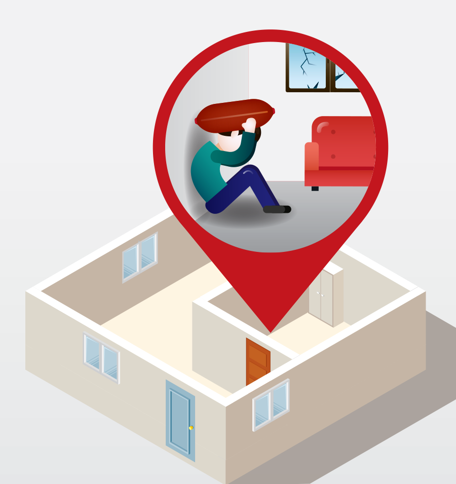

토네이도는 거의 경보 없이 순식간에 발생하며 이동 경로를 예측하기 어려우므로 목격하는 즉시 대피해야 합니다.
최선의 대피 장소는 견고한 콘크리트 건물의 지하실입니다. 지하실이 없다면 건물 제일 아래층으로 대피합니다.
컨테이너 가건물은 고정되어 있더라도 쉽게 뜯겨 날아가며 토네이도로부터 보호 기능을 거의 제공하지 못합니다. 가장 가까운 견고한 건물로 이동해야 합니다.

출입구와 창문, 외벽으로부터 먼 실내의 중심에 머무릅니다. 벽장이나 복도처럼 외부로부터 벽이 여려 겹 쳐질수록 더 안전합니다.
토네이도는 물론 태풍의 강풍도, 대부분의 인명 피해는 날아다니는 파편으로 인한 부상입니다. 두꺼운 옷, 담요를 덮어 몸을 보호하고, 쿠션 같은 것으로 특히 머리를 잘 가려야 합니다.
토네이도가 지나간 후 밖에 나갈 때는 밑창이 두껍고 발 전체를 덮는 견고한 신발을 신어 유리조각 및 잔해에 찔리지 않도록 합니다.